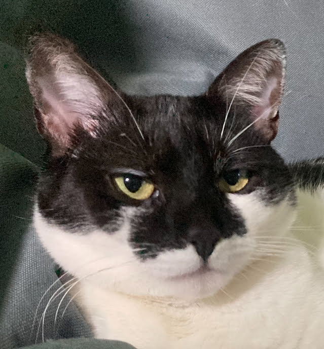

Zistite o mne viac

Kto som?
Volám sa Andrej a som v 3. ročníku na FEI STU v Bratislave.
Študujem odbor Aplikovaná informatika.
Pochádzam z Prešova.
Venujem sa naberaniu zručností a vedomostí z IT sektora.
3 veci, čo ma charakterizujú:
- efektívne vyhľadávanie riešení
- analytické myslenie
- zápal pre nové technológie